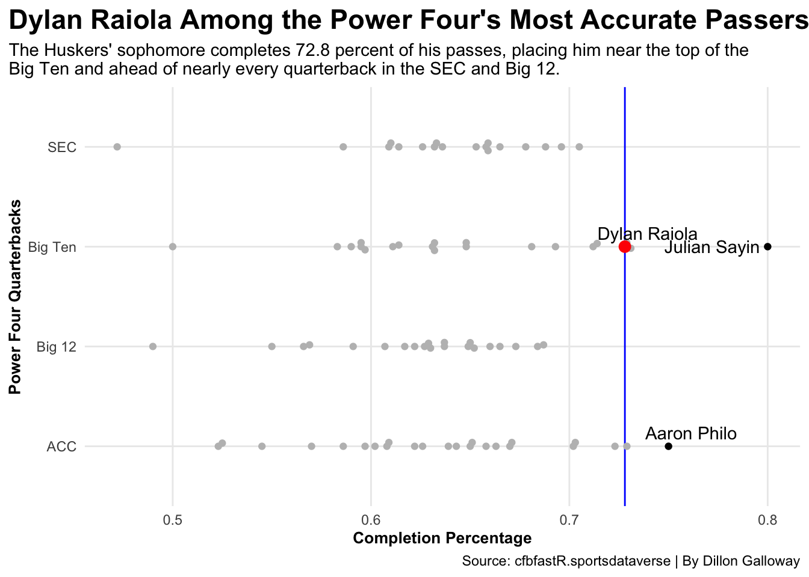
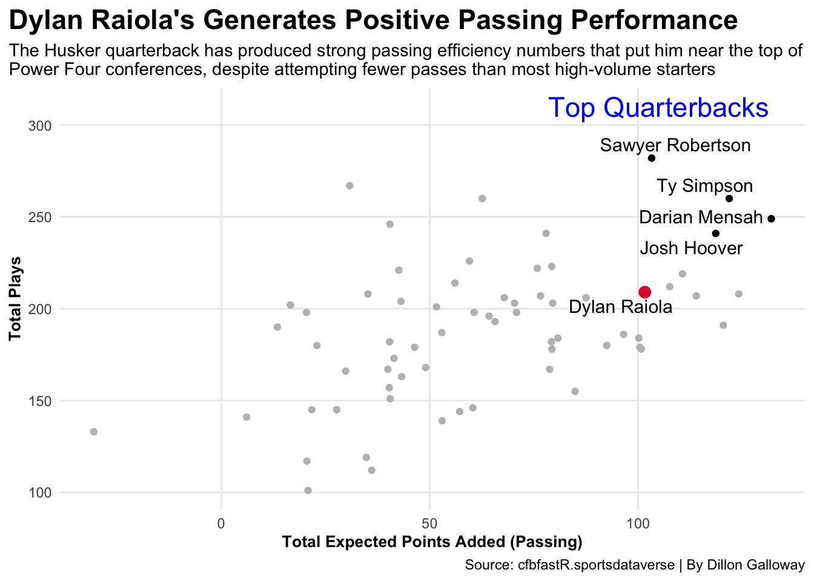
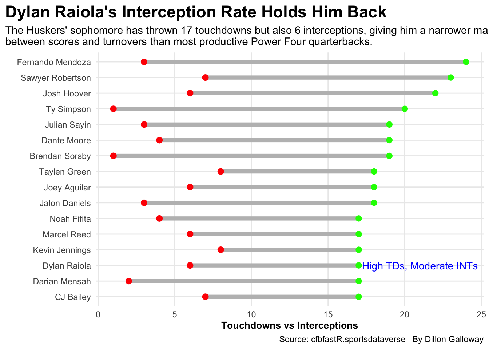

Dylan Raiola’s sophomore season tells two different stories. Nebraska fans watching games might think their young quarterback is struggling. The sack numbers look terrible, but anyone watching closely can see something else: a talented quarterback still learning and developing, showing flashes of brilliance mixed with potential decision-making issues and/or a bad offensive line.
The question isn’t whether Raiola is good enough. The question is: How good could he be with absolute protection?
Let’s look at the numbers from before his season-ending injury in Week 9 against USC.
Code
library(tidyverse)library(ggbeeswarm)library(ggplot2)library(ggrepel)library(ggalt)library(gt)qbdata<-read_csv("qbs2025.csv")dylanraiola <- qbdata|>filter(player=="Dylan Raiola")qb_pct<-qbdata|>filter(passing_completions >20)|>filter(conference =="Big Ten"| conference =="SEC"| conference =="ACC"| conference =="Big 12")topqb_pct<- qbdata|>filter(passing_completions >20)|>filter(conference =="Big Ten"| conference =="SEC"| conference =="ACC"| conference =="Big 12")|>filter(passing_pct >0.745)ggplot() +geom_vline(xintercept =0.728, color="blue")+geom_beeswarm(data=qb_pct, groupOnX=TRUE, aes(x=passing_pct, y=conference), color="grey") +geom_beeswarm(data=topqb_pct, groupOnX=TRUE, aes(x=passing_pct, y=conference), color="black")+geom_beeswarm(data=dylanraiola, groupOnX=TRUE, aes(x=passing_pct, y= conference), color="red",size=3)+geom_text_repel(data=dylanraiola, aes(x=passing_pct, y= conference, label="Dylan Raiola"))+geom_text_repel(data=topqb_pct, aes(x=passing_pct, y= conference, label= player))+labs(x="Completion Percentage", y="Power Four Quarterbacks", title="Dylan Raiola Among the Power Four's Most Accurate Passers", subtitle="The Huskers' sophomore completes 72.8 percent of his passes, placing him near the top of the \nBig Ten and ahead of nearly every quarterback in the SEC and Big 12.", caption="Source: cfbfastR.sportsdataverse | By Dillon Galloway") +theme_minimal() +theme(plot.title =element_text(size =17, face ="bold"),axis.title =element_text(size =10,face ="bold"), plot.subtitle =element_text(size=11), panel.grid.minor =element_blank(),plot.title.position ="plot" )

Through nine games, Raiola’s accuracy stood out. The Huskers’ sophomore completed 72.8 percent of his passes, ranking fourth in the Big Ten behind Ohio State’s Julian Sayin, the passing completion leader. That put him among the top handful of quarterbacks across all Power Four conferences.
Looking across the SEC, Big 12, and ACC, very few quarterbacks could match Raiola’s accuracy. He was more accurate than almost everyone, showing the kind of precision that separates good quarterbacks from great ones.
This was a quarterback with natural accuracy who consistently delivered the ball on target. The completion percentage showed what Nebraska has in Raiola, real talent that’s still developing but already producing at an elite level.
Code
qbs <-read_csv("plays2025.csv")powerfourEPA<-qbs |>filter(conference =="Big Ten"| conference =="SEC"| conference =="ACC"| conference =="Big 12") |>filter(grepl("Pass", play_type) ==TRUE) |>group_by(pos_team, conference, passer_player_name) |>summarize(plays =n(),total_EPA =sum(EPA, na.rm=TRUE) ) |>filter(plays >100) |>mutate(position ="QB")|>arrange(desc(total_EPA))dylanraiola <- powerfourEPA |>filter(passer_player_name =="Dylan Raiola")topqbs <-powerfourEPA|>filter(plays >230)|>filter(total_EPA >100)ggplot() +geom_point(data=powerfourEPA, aes(x=total_EPA, y= plays), color="grey") +geom_point(data=dylanraiola, aes(x=total_EPA, y= plays), size=3, color="#E41C38")+geom_point(data=topqbs, aes(x=total_EPA, y= plays), color="black")+geom_text_repel(data=dylanraiola, aes(x=total_EPA, y= plays, label="Dylan Raiola"),size=4)+geom_text_repel(data=topqbs, aes(x=total_EPA, y= plays, label= passer_player_name),size =4)+geom_text(aes(x=105, y=310, label="Top Quarterbacks"), size =6, color="blue") +labs(x="Total Expected Points Added (Passing)", y="Total Plays", title="Dylan Raiola's Generates Positive Passing Performance", subtitle="The Husker quarterback has produced strong passing efficiency numbers that put him near the top of \nPower Four conferences, despite attempting fewer passes than most high-volume starters", caption="Source: cfbfastR.sportsdataverse | By Dillon Galloway") +theme_minimal() +theme(plot.title =element_text(size =17, face ="bold"),axis.title =element_text(size =10,face ="bold"), plot.subtitle =element_text(size=11), panel.grid.minor =element_blank(),plot.title.position ="plot" )

Raiola’s passing efficiency numbers backed up what the completion percentage showed. Despite attempting fewer passes than some of the Power Four’s highest-volume quarterbacks, he generated substantial combined Expected Points Added numbers over the nine games he played, which put him near the conference’s best.
What stood out was how efficiently Raiola used his opportunities. He wasn’t getting the same volume as quarterbacks like Sawyer Robertson or Ty Simpson, but he was producing at a similar level when he did throw. For a sophomore still learning the game, these numbers suggest significant potential.
The efficiency metrics revealed a player who’s starting to understand the game at a higher level. These are encouraging stats for a young quarterback’s development, proof that the talent is there and growing.
Code
qbdata<-read_csv("qbs2025.csv")top15<- qbdata|>filter(conference =="Big Ten"| conference =="SEC"| conference =="ACC"| conference =="Big 12")|>select(player, passing_td,passing_int)|>arrange(desc(passing_td))|>top_n(15,wt=passing_td)ggplot() +geom_dumbbell(data=top15, aes(y=reorder(player,passing_td), x=passing_td, xend=passing_int), size =2,color ="grey",colour_x ="green",colour_xend ="red")+geom_text(aes(x=21, y="Dylan Raiola", label="High TDs, High INTs"), color="blue", size=4) +labs(x="Touchdowns vs Interceptions", y ="",title="Dylan Raiola's Interception Rate Holds Him Back", subtitle="The Huskers' sophomore has thrown 17 touchdowns but also 6 interceptions, giving him a narrower margin\nbetween scores and turnovers than most productive Power Four quarterbacks.", caption="Source: cfbfastR.sportsdataverse | By Dillon Galloway") +theme_minimal() +theme(plot.title =element_text(size =17, face ="bold"),axis.title =element_text(size =10,face ="bold"),plot.subtitle =element_text(size=10.9), panel.grid.minor =element_blank(),plot.title.position ="plot" )

Here’s where Raiola’s development shows room for growth. His 17 touchdowns and 6 interceptions through nine games created a smaller gap than the Power Four’s best quarterbacks. Compare him to Fernando Mendoza (24 TDs, 3 INTs) or Brendan Sorsby (19 TDs, 1 INT), and you see where Raiola still needs to improve.
The interception rate reveals what you might expect from a sophomore quarterback: occasional mistakes in decision-making and timing. Sometimes Raiola forced throws that weren’t there. Sometimes he didn’t recognize coverage quickly enough. These are correctable issues that come with experience.
The good news is that 17 touchdowns in nine games show real production. The interceptions aren’t totally alarming; it’s part of the learning process. As Raiola gains more experience reading defenses and understanding when to take risks versus when to play it safe, these numbers should improve. This is a work in progress, not a finished product.
Code
qbplays <-read_csv("plays2025.csv")qbsacked<- qbplays |>filter(play_type =="Sack") |>filter(week <10) |>filter(conference =="Big Ten"| conference =="SEC"| conference =="ACC"| conference =="Big 12") |>filter(!str_detect(passer_player_name, "Shotgun"))|>group_by(pos_team, passer_player_name) |>tally(sort=TRUE)|>rename("Team"=pos_team,"Player"=passer_player_name,"Times Sacked"= n)|>ungroup() |>mutate(Rank =row_number()) |>relocate(Rank, .before = Team)|>top_n(-10,wt=Rank)qbsacked|>select(-Rank)|>gt()|>tab_header(title ="Dylan Raiola Takes More Sacks Than Any Quarterback in the Power Four",subtitle ="With 24 sacks taken, the sophomore has hit the turf more than any other Power Four quarterback, suggesting the Husker quarterback is struggling with his offensive line or his own decison-making or a combination of both." ) |>tab_source_note(source_note =md("**By:** Dillon Galloway | **Source:** [cfbfastR](https://cfbfastR.sportsdataverse.org/)") ) |>tab_style(style =cell_text(color ="black", weight ="bold", align ="left"),locations =cells_title("title") ) |>tab_style(style =cell_text(color ="black", align ="left"),locations =cells_title("subtitle") ) |>tab_style(locations =cells_column_labels(columns =everything()),style =list(cell_borders(sides ="bottom", weight =px(3)),cell_text(weight ="bold", size=12) ) ) |>data_color(columns =vars(`Times Sacked`),colors = scales::col_numeric(palette =c("white", "orange", "#E41C38"),domain =NULL) )
Dylan Raiola Takes More Sacks Than Any Quarterback in the Power Four
With 24 sacks taken, the sophomore has hit the turf more than any other Power Four quarterback, suggesting the Husker quarterback is struggling with his offensive line or his own decison-making or a combination of both.
The 24 sacks tell a complicated story. Through nine games before his injury against USC, Raiola was sacked more than any quarterback in the Power Four. Arnold, Altmyer, and Sellers each took 22 sacks, but Raiola stood alone at the top.
The sack number likely reflects multiple factors. Protection issues play a role, but so does Raiola’s own development as a quarterback. His pocket awareness and ability to scramble with the ball are lacking, leading to a high number of sacks. These are skills that can improve with experience and coaching. The high sack total is concerning, but it’s also part of the development process for a player still figuring out the speed of college football.